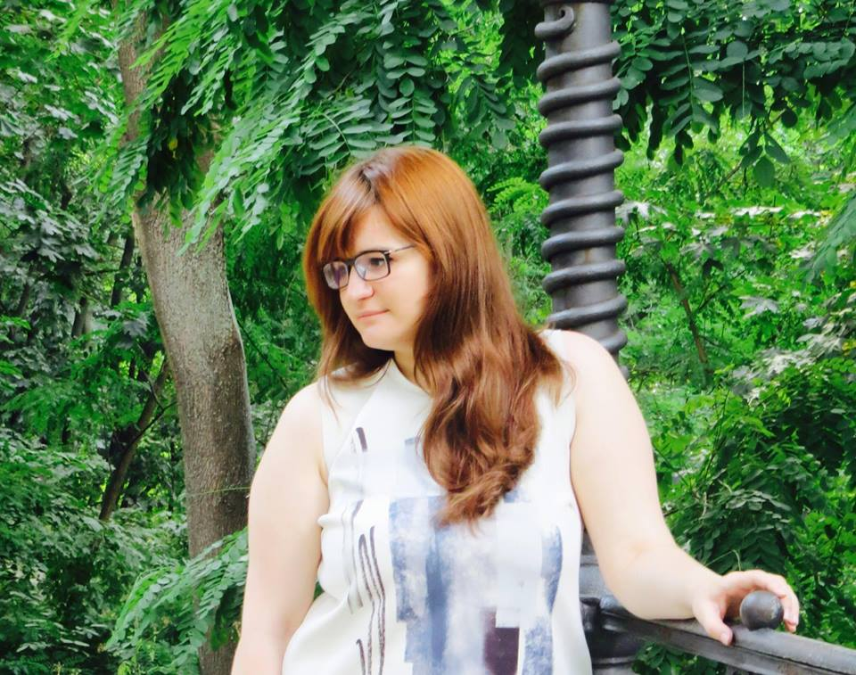

Петрук Наталія

- дата народження: 14.03.1996
- контакти: luckynatta@i.ua; facebook
- тел.: 555-55-55
Мета
- резюме подається на здобуття посади мультимедійного редактора інтернет-видання
Освіта
- 2003-2014 - СЗОШ №254
- з 2014 - по 2018 КНУ ім. Тараса Шевченка (Інститут журналістики)
Досвід роботи
- травень, 2015 - Редакція журналу
Міжнародний туризм
- червень, 2017 - до тепер - Радіо Вільна Європа/Радіо Свобода
Вміння та навички
- написання журналістських матеріалів
- робота в програмах Indisign, Photoshop, Illustrator
Особисті якості
- комунікабельність, відповідальність, цілеспрямованість, гнучкість, креативність, вміння працювати у команді